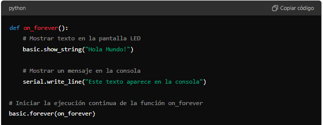
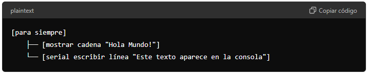
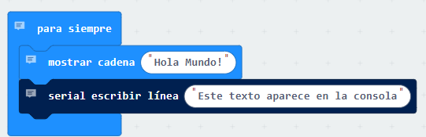

1. Mi primer programa
Planteamiento del problema
Queremos crear un programa sencillo utilizando la micro que muestre un mensaje de texto en la pantalla LED de la micro y envíe un mensaje a la consola de la computadora. Este programa debe ejecutarse de manera continua, repitiendo ambos mensajes indefinidamente.
Solución con MICROPYTHON
Código en Python para micro:bit:

Explicación detallada del código:
- Definición de la función on_forever:
def on_forever():
Esta línea define una función llamada on_forever. En Python, una función es un bloque de código que realiza una tarea específica. En este caso, la función on_forever contendrá las instrucciones que queremos que se repitan continuamente en la micro
- Mostrar texto en la pantalla LED:
basic.show_string("Hola Mundo!")
es una instrucción que utiliza la micro para mostrar el texto "Hola Mundo!" en su pantalla LED. Este texto se muestra desplazándose letra por letra. La función show_string pertenece al módulo basic, que contiene funciones básicas para controlar la micro
- Enviar un mensaje a la consola:
serial.write_line("Este texto aparece en la consola")
es una instrucción que envía el texto "Este texto aparece en la consola" a la consola de la computadora que está conectada a la micro
Esta es una función útil para depuración y seguimiento de lo que está haciendo la micro
La función write_line pertenece al módulo serial, que maneja la comunicación serie con la computadora.
- Ejecución continua de la función on_forever:
basic.forever(on_forever)
Esta línea es crucial porque le indica a la micro que ejecute la función on_forever de forma continua y sin detenerse. El módulo basic contiene la función forever, que toma como argumento una función (en este caso, on_forever) y la ejecuta en un ciclo infinito.
Resumen de la estructura del código:
- Definición de la función
on_forever: Aquí se colocan las instrucciones que queremos que se repitan continuamente. - Mostrar texto en la pantalla LED: La función
basic.show_string("Hola Mundo!")muestra el mensaje en la pantalla LED. - Enviar mensaje a la consola: La función
serial.write_line("Este texto aparece en la consola")envía un mensaje a la consola. - Ejecución continua: La función
basic.forever(on_forever)asegura que todo lo que esté enon_foreverse ejecute continuamente, logrando así un ciclo infinito en la micro
Solución con BLOQUES MAKECODE
Estructura del código en MakeCode:

Explicación de la estructura del código:
-
Bloque "Para Siempre" (
forever)- Ubicación en MakeCode:
Básico > para siempre. - Función: Este bloque ejecuta de forma continua el código que contiene. Es ideal para tareas que deben repetirse indefinidamente mientras el micro está encendido.
- Ubicación en MakeCode:
-
Bloque "Mostrar Cadena" (
show string)- Ubicación en MakeCode:
Básico > mostrar cadena. - Función: Muestra una secuencia de caracteres (cadena de texto) en la pantalla de LEDs del micro. En este caso, muestra el texto "Hola Mundo!".
- Configuración del Bloque:
- Cadena de Texto: Puedes ingresar cualquier texto que desees mostrar en la pantalla. En este caso, se ha configurado para mostrar "Hola Mundo!".
- Ubicación en MakeCode:
-
Bloque "Serial Escribir Línea" (
serial write line)- Ubicación en MakeCode:
Serial > serial escribir línea. - Función: Envía una cadena de texto a través del puerto serial, lo que significa que el texto se envía a la consola de serie o al monitor serial conectado al micro. En este caso, envía "Este texto aparece en la consola".
- Configuración del Bloque:
- Cadena de Texto: Puedes ingresar cualquier texto que desees enviar a la consola. Aquí, se ha configurado para enviar "Este texto aparece en la consola".
- Ubicación en MakeCode:
Comportamiento del Programa:
- Visualización en Pantalla:
- Cadena de Texto: El programa muestra repetidamente "Hola Mundo!" en la pantalla de LEDs del micro. El texto desfilará por la pantalla, lo que es útil para mostrar mensajes cortos o indicadores visuales.
- Envío a la Consola Serial:
- Texto en Consola: Al mismo tiempo, el programa envía "Este texto aparece en la consola" a través del puerto serial. Este texto aparecerá en la consola serial del entorno de programación (si está conectada), lo que es útil para depuración o para registrar eventos.
Resumen:
Este código en MakeCode muestra cómo combinar la salida visual en la pantalla de LEDs del micro con la salida de texto en la consola serial. Mientras el micro muestra un mensaje en su pantalla, también está enviando información a la consola serial, lo que puede ser útil para monitorear el comportamiento del programa o para la depuración. Es una excelente manera de demostrar cómo se pueden utilizar diferentes medios de salida (pantalla y consola) en un programa simple de micro
